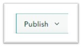
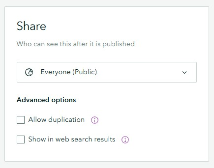

ArcGIS StoryMaps Settings
September 5, 2025
Adjusting Your StoryMaps Settings:
How to Publish Your Story Map:
Once you have finished creating your story map, the final step is to publish it. Publishing allows you to choose who can view your story map and any content you have added, such as a web map. If you make changes after publishing, just click Publish again to update your story map.
When you share your story map, the software will automatically ask if you want to update sharing settings for anything included in your story map, like an ArcGIS Online web map. If you see this prompt, click Yes, Share these Items. If you do not change these settings, other people will not be able to see your content when they look at your story map.
Click the Publish button in the StoryMaps builder.
The default sharing setting is Private. This means that your story map is only visible to you.
You can update your sharing settings to share with a wider audience:
- Organization: Your story map will be visible to anyone at Northwestern University. Viewers will need to sign into their Northwestern ArcGIS Online account to view your story map.
- Everyone (Public): Your story map is visible to everyone.
- Group Sharing: Share content with members of an ArcGIS Online group. You can provide read-only access to your story map or editing access if you are a member of a shared update group. See Collaborate on a StoryMap for more information about using ArcGIS Online Groups.
Update Story Card:
On the Publishing screen, you can update your story card by adding a thumbnail image, title, and description. I suggest adding this information when you publish.
Advanced Publishing Options:
If you want others to copy your story map, choose the allow duplication option. This lets users save and edit their own copy, but their changes will not affect your original story map.
To make your story map easier to find, you can choose to show it in web search results results. You can enable or disable this option as needed.

